The magnetic field created by sending current through a conductor is similar in nature to the magnetic field of a permanent magnet. (In reality, the magnetic field pattern of a permanent bar magnet, in Fig. 2.111c, is more accurately mimicked when the wire is coiled into a tight solenoid, as shown in Fig. 2.111e.) The fact that both a current-carrying wire and a permanent magnet produce magnetic fields is no coincidence. Permanent magnets made from ferromagnetic materials exhibit magnetic closed-loop fields, mainly as a result of the motion of unpaired electrons orbiting about the nucleus of an atom, as shown in Fig. 2.112, generating a dipole magnetic field. The lattice structure of the ferromagnetic material has an important role of fixing a large portion of the atomic magnetic dipoles in a fixed direction, so as to set up a net magnetic dipole pointing from north to south. This microscopic motion of the unpaired electron about the nucleus of the atom resembles the flow of current through a loop of wire, as depicted in Fig. 2.111d. (Electron spin is another source of magnetic fields, but is far weaker than that due to the electron orbital.)
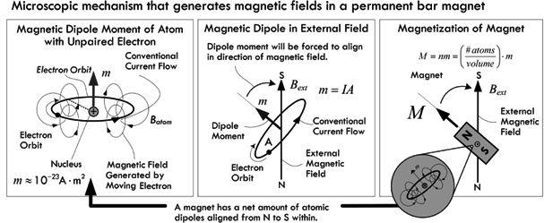
FIGURE 2.112 Microscopically, the magnetic field of a permanent magnet is a result of unpaired valence electrons fixed in a common direction, generating a magnetic dipole. The fixing in orientation is a result of atomic bonding in the crystalline lattice structure of the magnet.
By coiling a wire into a series of loops, a solenoid is formed, as shown in Fig. 2.111e. Every loop of wire contributes constructively to make the interior field strong. In other words, the fields inside the solenoid add together to form a large field component that points to the right along the axis, as depicted in Fig. 2.111e. By placing a ferromagnetic material (one that isn’t initially magnetized) within a solenoid, as shown in Fig. 2.111f, a much stronger magnetic field than would be present with the solenoid alone is created. The reason for such an increase in field strength has to do with the solenoid’s field rotating a large portion of the core’s atomic magnetic dipoles in the direction of the field. Thus, the total magnetic field becomes the sum of the solenoid’s magnetic field and the core’s temporarily induced magnetic field. Depending on material and construction, a core can magnify the total field strength by a factor of 1000.
2.24.2 Magnetic Fields and Their Influence
Magnetic fields, unlike electric fields, only act upon charges that are moving in a direction that is perpendicular (or has a perpendicular component) to the direction of the applied field. A magnetic field has no influence on a stationary charge, unless the field itself is moving. Figure 2.113a shows the force exerted upon a moving charge placed within a magnetic field. When considering a positive charge, we use our right hand to determine the direction of force upon the moving charge—the back of the hand points in the direction of the initial charge velocity, the fingers curl in the direction of the external magnetic field, and the thumb points in the direction of the force that is exerted upon the moving charge. For a negative charge, like an electron, we can use the left hand, as shown in Fig. 2.113b. If a charge moves parallel to the applied field, it experiences no force due to the magnetic field—see Fig. 2.113c.
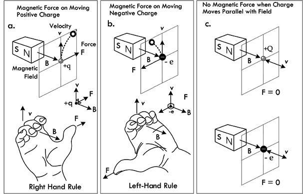
FIGURE 2.113 Illustration showing the direction of force upon a moving charge in the presence of a fixed magnetic field.
In terms of a group of moving charges, such as current through a wire, the net magnetic field of one wire will exert a force on the other wire and vice versa (provided the current is fairly large), as shown in Fig. 2.114. (The force on the wire is possible, since the electrostatic forces at the surface of the lattice structure of the wire prevent electrons from escaping from the surface.)
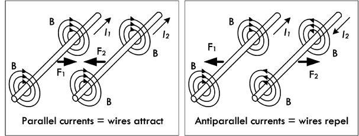
FIGURE 2.114 Forces exerted between two current-carrying wires.
Likewise, the magnetic field of a fixed magnet can exert a force on a current-carrying wire, as shown in Fig. 2.115.
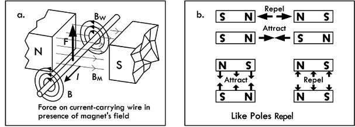
FIGURE 2.115 (a) The force a current-carrying wire experiences in the presence of a magnet’s field. (b) Illustration showing how bar magnets attract and repel.
Externally, a magnet is given a north-seeking (or “north,” for short) and south-seeking (or “south,” for short) pole. The north pole of one magnet attracts the south pole of another, while like poles repel—see Fig. 2.115b. You may ask how two stationary magnets exert forces on each other. Isn’t the requirement that a charge or field must be moving for a force to be observed? We associate the macroscopic (observed) force with the forces on the moving charges that comprise the microscopic internal magnetic dipoles which are, at the heart, electrons in motion around atoms. These orbitals tend to be fixed in a general direction called domains—a result of the lattice binding forces.
Another aspect of magnetic fields is their ability to force electrons within conductors to move in a certain direction, thus inducing current flow. The induced force is an electromotive force (EMF) being set up within the circuit. However, unlike, say, a battery’s EMF, an induced EMF depends on time and also on geometry. According to Faraday’s law, the EMF induced in a circuit is directly proportional to the time rate of change of the magnetic flux through the circuit:
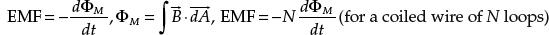
(2.49)
where ΦM is the magnetic flux threading through a closed-loop circuit (which is equal to the magnetic field B dotted with the direction surface area—both of which are vectors, and summed over the entire surface area—as the integral indicates). According to the law, the EMF can be induced in the circuit in several ways: (1) the magnitude of B can vary with time; (2) the area of the circuit can change with time; (3) the angle between B and the normal of A can change with time; (4) any combination of these can occur. See Fig. 2.116.
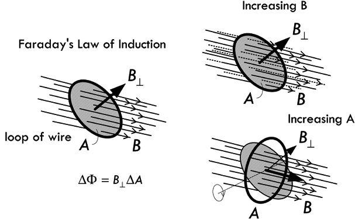
FIGURE 2.116 Illustration of Faraday’s law of induction.
The simple ac generator in Fig. 2.117 shows Faraday’s law in action. A simple rotating loop of wire in a constant magnetic field generates an EMF that can be used to power a circuit. As the loop rotates, the magnetic flux through it changes with time, inducing an EMF and a current in an external circuit. The ends of the loop are connected to slip rings that rotate with the loop, while the external circuit is linked to the generator by stationary brushes in contact with the slip rings.
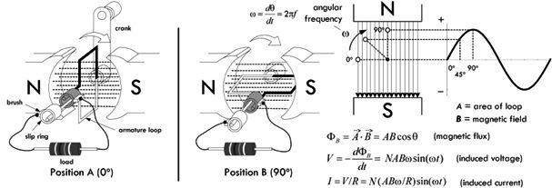
FIGURE 2.117 Basic ac generator.
A simple dc generator is essentially the same as the ac generator, except that the contacts to the rotating loop are made using a split ring or commutator. The result is a pulsating direct current, resembling the absolute value of a sine wave—there are no polarity reversals.
A motor is essentially a generator operating in reverse. Instead of generating a current by rotating a loop, a current is supplied to the loop by a battery, and the torque acting on the current-carrying loop causes it to rotate. Real ac generators and motors are much more complex than the simple ones demonstrated here. However, they still operate under the same fundamental principles of electromagnetic induction.
The circuit in Fig. 2.118 shows how it is possible to induce current within a secondary coil of wire by suddenly changing the current flow through a primary coil of wire. As the magnetic field of the primary expands, an increasing magnetic flux permeates the secondary. This induces an EMF that causes current to flow in the secondary circuit. This is the basic principle behind how transformers work; however, a real transformer’s primary and secondary coils are typically wound around a common ferromagnetic core to increase magnetic coupling.
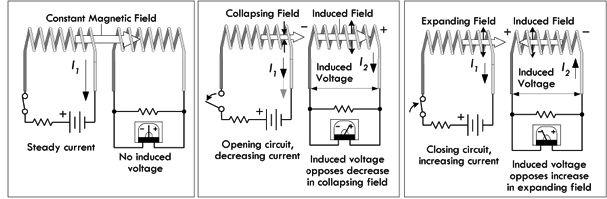
FIGURE 2.118 An induced voltage, or EMF, is generated in the secondary circuit whenever there is a sudden change in current in the primary.
2.24.3 Self-Inductance
In the previous section, we saw how an EMF could be induced in a closed-loop circuit whenever the magnetic flux through the circuit changed with time. This phenomenon of electromagnetic induction is used in a number of mechanisms, such as motors, generators, and transformers, as was pointed out. However, in each of these cases, the induced EMF was a result of an external magnetic field, such as the primary coil in relation to a secondary coil. Now, however, we will discuss a phenomenon called self-induction. As the name suggests, self-induction typically involves a looped wire inflicting itself with an induced EMF that is generated by the varying current that passes through it. According to Faraday’s law of induction, the only time that our loop can self-inflict is when the magnetic field grows or shrinks in strength (as a result of an increase or decrease in current). Self-induction is the basis for the inductor, an important device used to store energy and release energy as current levels fluctuate in time-dependent circuits.
Consider an isolated circuit consisting of a switch, a resistor, and a voltage source, as shown in Fig. 2.119. If you close the switch, you might predict that the current flow through the circuit would jump immediately from zero to V/R, according to Ohm’s law. However, according to Faraday’s law of electromagnetic induction, this isn’t entirely accurate. Instead, when the switch is initially closed, the current increases rapidly. As the current increases with time, the magnetic flux through the loop rises rapidly. This increasing magnetic flux then induces an EMF in the circuit that opposes the current flow, giving rise to an exponentially delayed rise in current. We call the induced EMF a self-induced EMF.
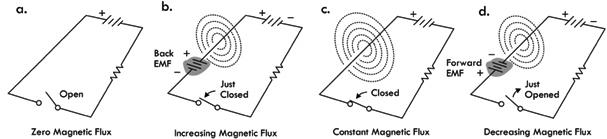
FIGURE 2.119 (a) Circuit is open and thus no current or magnetic field is generated. (b) The moment the circuit is closed, current begins to flow, but at the same time, an increasing magnetic flux is generated through the circuit loop. This increasing flux induced a back EMF that opposes the applied or external EMF. After some time, the current levels off, the magnetic flux reaches a constant value, and the induced EMF disappears. (d) If the switch is suddenly opened, the current attempts to go to zero; however, during this transition, as the current goes to zero, the flux decreases through the loop, thus generating a forward induced voltage of the same polarity as the applied or external EMF. As we’ll see later, when we incorporate large solenoid and toroidal inductors within a circuit, opening a switch such as this can yield a spark—current attempting to keep going due to a very large forward EMF.
Self-induction within a simple circuit like that shown in Fig. 2.119 is usually so small that the induced voltage has no measurable effect. However, when we start incorporating special devices that concentrate magnetic fields—namely, discrete inductors—time-varying signals can generate significant induced EMFs. For the most part, unless otherwise noted, we shall assume the self-inductance of a circuit is negligible compared with that of a discrete inductor.
2.24.4 Inductors
Inductors are discrete devices especially designed to take full advantage of the effects of electromagnetic induction. They are capable of generating large concentrations of magnetic flux, and they are likewise capable of experiencing a large amount of self-induction during times of great change in current. (Note that self-induction also exists within straight wire, but it is usually so small that it is ignored, except in special cases, e.g., VHF and above, where inductive reactance can become significant.)
The common characteristic of inductors is a looplike geometry, such as a solenoid, toroid, or even a spiral shape, as shown in Fig. 2.120. A solenoid is easily constructed by wrapping a wire around a hollow plastic form a number of times in a tight-wound fashion.
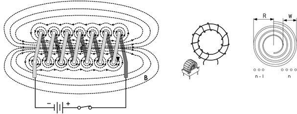
FIGURE 2.120 Various coil configurations of an inductor—solenoid, toroid, and spiral.
The basic schematic symbol of an air core inductor is given by . Magnetic core inductors (core is either iron, iron powder, or a ferrite-type ceramic), adjustable core inductors, and a ferrite bead, along with their respective schematic symbols are shown in Fig. 2.121.
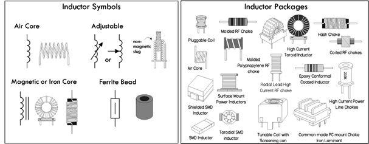
FIGURE 2.121
Magnetic core inductors are capable of generating much higher magnetic field densities than air core inductors as a result of the internal magnetization that occurs at the atomic level within the core material due to the surrounding wire coil’s magnetic field. As a result, these inductors experience much greater levels of self-induction when compared to air core inductors. Likewise, it is possible to use fewer turns when using a magnetic core to achieve a desired inductance. The magnetic core material is often iron, iron powder, or a metallic oxide material (also called a ferrite, which is ceramic in nature). The choice of core material is a complex process that we will cover in a moment.
Air core inductors range from a single loop in length of wire (used at ultrahigh frequencies), through spirals in copper coating of an etched circuit board (used at very high frequencies), to large coils of insulated wire wound onto a nonmagnetic former. For radio use, inductors often have air cores to avoid losses caused by magnetic hysteresis and eddy current that occur within magnetic core–type inductors.
Adjustable inductors can be made by physically altering the effective coil length—say, by using a slider contact along the uncoated coil of wire, or more commonly by using a ferrite, powdered iron, or brass slug screwed into the center of the coil. The idea behind the slug-tuned inductor is that the inductance depends on the permeability of the material within the coil. Most materials have a relative permeability close to 1 (close to that of vacuum), while ferrite materials have a large relative permeability. Since the inductance depends on the average permeability of the volume inside the coil, the inductance will change as the slug is turned. Sometimes the slug of an adjustable inductor is made of a conducting material such as brass, which has a relative permeability near 1, in which case eddy currents flow on the outside of the slug and eliminate magnetic flux from the center of the coil, reducing its effective area.
A ferrite bead, also known as a ferrite choke, is a device akin to an inverted ferrite core inductor. Unlike a typical core inductor, the bead requires no coiling of wire (though it is possible to coil a wire around it for increased inductance, but then you’ve created a standard ferrite core inductor). Instead, a wire (or set of wires) is placed through the hollow bead. This effectively increases the inductance of the wire (or wires). However, unlike a standard inductor that can achieve practically any inductance based on the total number of coil turns, ferrite beads have a limited range over which they can influence inductance. Their range is typically limited to RF (radiofrequency). Ferrite beads are often slipped over cables that are known to be notorious radiators of RF (e.g., computers, dimmers, fluorescent lights, and motors). With the bead in place, the RF is no longer radiated but absorbed by the bead and converted into heat within the bead. (RF radiation can interfere with TV, radio, and audio equipment.) Ferrite beads can also be placed on cables entering receiving equipment so as to prevent external RF from entering and contaminating signals in the cable runs.
Inductor Basics
An inductor acts like a time-varying current-sensitive resistance. It only “resists” during changes in current; otherwise (under steady-state dc conditions), it passes current as if it were a wire. When the applied voltage increases, it acts like a time-dependent resistor whose resistance is greatest during times of rapid increase in current. On the other hand, when the applied voltage decreases, the inductor acts like a time-dependent voltage source (or negative resistance) attempting to keep current flowing. Maximal sourcing is greatest during times of rapid decreases in current.
In Fig. 2.122a, when an increasing voltage is applied across an inductor, resulting in an increasing current flow, the inductor acts to resist this increase by generating a reverse force on free electrons as a result of an increasing magnetic flux cutting across the coils of the solenoid (or crossing through the coil loops). This reverse force on free electrons can be viewed as an induced EMF that points in the opposite direction of the applied voltage. We deem this induced EMF a reverse EMF, also referred to as a back EMF. The result is that the inductor strongly resists during a sudden increase in current flow, but quickly loses its resistance once the current flow levels off to a constant value.
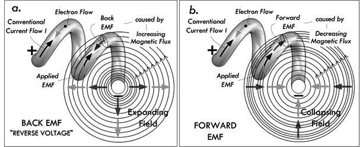
FIGURE 2.122
In Fig. 2.122b, when a decreasing voltage is applied across an inductor, resulting in a decreasing current flow, the inductor acts to resist this decrease by generating a forward force on free electrons as a result of a decreasing magnetic flux cutting across the coils of the solenoid (or crossing through the coil loops). This forward force on free electrons can be viewed as an induced EMF that points in the same direction as that of the applied voltage (the applied voltage that existed before the sudden change). We deem this induced EMF a forward EMF. The result is that the inductor acts like a voltage source during a sudden decrease in current flow, but quickly disappears once the current flow levels off to a constant value.
Another view of how inductors work is to consider energy transfer. The transfer of energy to the magnetic field of an inductor requires that work be performed by a voltage source connected across it. If we consider a perfect inductor where there is no resistance, the energy that goes into magnetic field energy is equal to the work performed by the voltage source. Or, in terms of power, the power is the rate at which energy is stored (P = dW/dt). Using the generalized power law P = IV, we can equate the powers and see that there must be a voltage drop across an inductor while energy is being stored in the magnetic field. This voltage drop, exclusive of any voltage drop due to resistance in a circuit, is the result of an opposing voltage induced in the circuit while the field is building up to its final value. Once the field becomes constant, the energy stored in the magnetic field is equal to the work performed by the voltage source.
Figure 2.123 illustrates what occurs when an inductor is energized suddenly as a switch is closed.
When an inductor is being energized, we say that electrical energy from an externally applied source is transformed into a magnetic field about the inductor. Only during times of change—say, when the switch is thrown, and the magnetic field suddenly grows in size—do we see inductive behavior that affects circuit dynamics.
In the circuit to the left, when the switch is thrown from position B to position A, a sudden change in voltage is applied across the inductor, resulting in a sudden increase in current flow. Where there was no magnetic field, there now is a rapidly growing magnetic field about the inductor. The inductor is said to be energizing. The expanding magnetic field cuts across its own inductor coils, which, by Faraday’s law, exerts a force of free electrons within the coil. The force on these electrons is such as to be pointing in the opposite direction as the applied voltage. This effective reverse force and the effect it has on the free electrons it deems a reverse EMF—it’s analogous to a little imaginary battery placed in the reverse direction of the applied voltage. (See Fig. 2.123b.) The result is that the inductor resists during increases in current. After a short while, the current flow through the circuit levels off, and the magnetic field stops growing and assumes a constant value. With no change in magnetic field strength, there is no increase in magnet flux through our fixed coils, so there is no more reverse EMF. The inductor acts as a simple conductor. Figure 2.123c shows the induced voltage and voltage across the resistor as a function of time.
Figure 2.123d shows the resultant current flow through the inductor as a result of the resultant voltage. Mathematically, the current flow is expressed by the following equation:
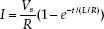
(You might question what happens if we assume an ideal inductor with zero internal resistance R. This is a very good question—one that we’ll discuss when we get to defining inductance mathematically.)
In terms of energy, this can be viewed as the electrical energy being transformed into magnetic field energy. In terms of power, we see that a voltage drop occurs as energy is pumped into the magnetic field. (We associate the drop with the back EMF.) Once the current levels off, no more energy goes into the field; hence, no reverse voltage (or voltage drop) is present.
FIGURE 2.123
Figure 2.124 illustrates what occurs as an inductor is deenergized suddenly by opening a switch.
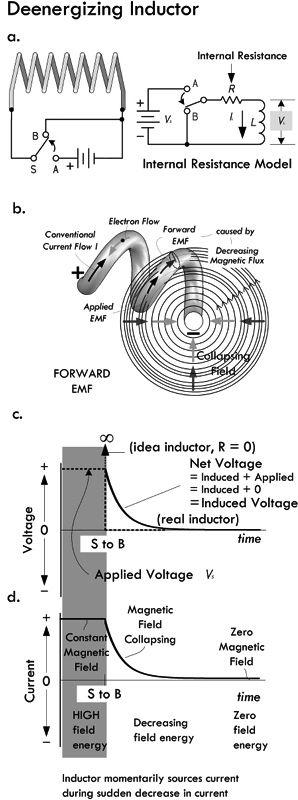
When an inductor is being deenergized, we say that the magnetic field energy of the inductor is “transformed” back into electrical energy. Again, only during times of change, which in our case involves a decreasing current flow, do we notice effects of induction.
In the circuit to the left, when the switch is thrown from position A to B, a sudden change voltage occurs across the inductor. The inductor initially opposes this decrease by generating a collapsing magnetic field that cuts across the inductor coils. According to Faraday’s law, a decreasing magnetic flux passes through the loops of the inductor, thus imparting a force upon free electrons within the coil in the same direction the applied voltage was pointing right before the switch occurred. Since the force is in the same direction, we deem the effect a forward EMF. Hence, the inductor sources current when attempts are made to decrease current flow. The energy for it to do so comes from the magnetic field, whose energy drops in proportion to the electrical energy delivered to the circuit. See (b).
Part (c) shows the resultant voltage across an inductor adding the applied voltage to the inducted voltage.
Part (d) shows the resultant current flow through the inductor as a result of the resultant voltage.
Mathematically, the current flow is expressed by the following equation:
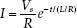
(Again, you might question what happens if we assume an ideal inductor with zero internal resistance R. This is a very good question—one that we’ll discuss when we get to defining inductance mathematically.)
Note: We must assume that when the switch is thrown from A to B, the transition occurs instantaneously. We’ll see in a moment that when a physical break occurs, cutting current flow through an inductive circuit, the collapsing magnetic field can be large enough to generate an EMF capable of causing a spark to jump between the break points (i.e., switch contacts).
FIGURE 2.124
2.24.5 Inductor Water Analogy
The property of inductance in electric circuits is closely analogous to mass inertia in mechanical systems. For example, the property of an inductor resisting any sudden changes in current flow (increasing or decreasing) is similar to a mass on a spinning wheel resisting any change in motion (increasing or decreasing in speed). In the following water analogy, we take this mass analogy to heart, incorporating a water turbine/flywheel device to represent a “water inductor.”
To start, we consider a basic electrical inductor circuit, as shown to the left in Fig. 2.125. The field generated by a suddenly applied voltage creates a reverse induced voltage of opposite polarity that initially “resists” current flow. Quickly, depending on the inductance value, the reverse voltage disappears as the magnetic field becomes constant, at which point it has reached a maximum strength and energy. A collapsing field generated when the applied voltage is removed creates a forward induced voltage that attempts to keep current flowing. Quickly, depending on the inductance value, the forward voltage disappears and the magnetic field goes to zero.
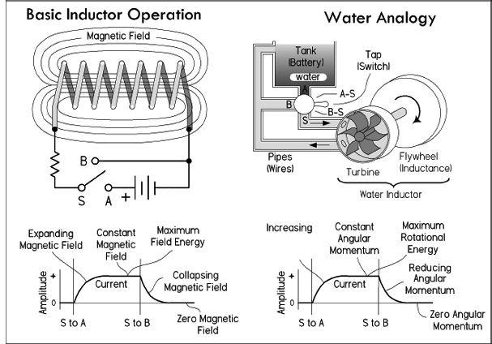
FIGURE 2.125
In the water analogy, the turbine with attached flywheel resists any sudden changes in current flow. If water pressure is suddenly applied, the turbine initially resists water flow due to its mass and that of the attached flywheel. However, the pressure exerted over the turbine blades quickly gives rise to mechanical motion. Depending on the mass of the flywheel, the time it takes for the flywheel to reach a steady angular velocity will vary—a heavier flywheel will require more time (analogous to a high-value inductor requiring more time to reach a constant current after a sudden increase in applied voltage). When the flywheel reaches this constant angular rotation, the water inductor has maximum rotational momentum and energy. This is analogous to the magnetic field strength reaching a constant maximum strength and energy when the reverse voltage disappears. If there is any sudden interruption in applied pressure—say, by turning the tap to position B-S, as shown in Fig. 2.125—the flywheel’s angular momentum will attempt to keep current flowing. This is analogous to the collapsing magnetic field in an inductor inducing a forward voltage.
Example: What will happen when the switches are closed in the following three circuits? What happens when the switches are later opened? How does the size of the inductance and capacitance influence behavior? Refer to Fig. 2.126.
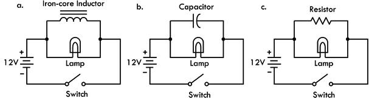
FIGURE 2.126
Answer: (a) When the switch is closed in the inductor circuit, the lamp will suddenly light up brightly, but then quickly dims out. This is because the moment the switch is closed, the inductor has very high impedance to current flow, but quickly loses its impedance as the current becomes constant (the magnetic field is no longer expanding). Once constant, the inductor acts like a short, and all current is diverted away from the lamp through the inductor. (We assume here that there is sufficient dc internal resistance in the inductor to prevent excessive current flow. Also, we assume the internal dc resistance of the inductor is much smaller than the internal resistance of the lamp.) A larger inductance value increases the time it takes for the lamp to dim out completely.
(b) When the switch is closed in the capacitor circuit, the opposite effect occurs; the lamp slowly builds up in brightness until it reaches maximum illumination. This is because when the switch is closed, the capacitor initially has very low impedance to current flow during rapid changes in applied voltage. However, as the capacitor charges up, the capacitor’s impedance rises toward infinity, and consequently resembles an open circuit—hence, all current is diverted through the lamp. A larger capacitance value increases the time it takes for the lamp to reach full brightness.
(c) When the switch is closed in the resistor circuit, free-electron flow throughout the system is essentially instantaneous. Aside from small inherent inductance and capacitance built into the circuit, there are no time-dependent effects on current flow caused by discrete inductance or capacitance. Note that since the voltage source is ideal, no matter what value the parallel resistor has, there will always be 12 V across the lamp, and hence the brightness of the lamp does not change over time.
2.24.6 Inductor Equations
Conceptually, you should now understand that the amplitude of the induced voltage—be it reverse or forward induced—is proportional to the rate at which the current changes, or the rate at which the magnetic flux changes. Quantitatively, we can express this relationship by using the following equation:
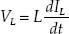
(2.50) Voltage across an inductor = induced EMF
If we integrate and solve for IL, we get:
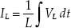
(2.51) Current through an inductor
In Eq. 2.50, the proportionality constant L is called the inductance. This constant depends on a number of physical inductor parameters, such as coil shape, number of turns, and core makeup. A coil with many turns will have a higher L value than one with few turns, if both coils are otherwise physically similar. Furthermore, if an inductor is coiled around a magnetic core, such as iron or ferrite, its L value will increase in proportion to the permeability of that core (provided circuit current is below the point at which the core saturates).
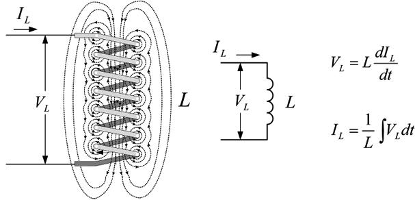
FIGURE 2.127 The voltage measured across an ideal inductor is the induced voltage, or EMF, symbolized VL. When there is a steady-state dc current flow, there is no induced voltage (VL is zero) and the inductor resembles a short. As we’ll see, the inductor equations can yield surprisingly unrealistic values, if we don’t consider internal resistance and capacitance inherently present within a real inductor.
The basic unit of inductance L is the henry, abbreviated H. One henry equals an induced voltage of 1 V when the current is varying at a rate of 1 A/s:
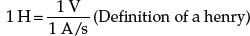
Making inductors from scratch is common in electronics, unlike the construction of capacitors, which is left almost exclusively to the manufacturers. Though we’ll examine how to make inductors in a moment, it’s worth taking a look at some commercial inductors. Note the inductance range, core type, current, and frequency limits listed in Table 2.7.
TABLE 2.7 Typical Characteristics of Commercial Inductors
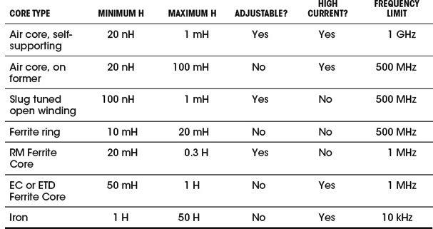
Typical values for commercial inductors range from fractions of a nanohenry to about 50 H. Inductances are most commonly expressed in terms of the following unit prefixes:
nanohenry (nH): 1 nH = 1 × 10−9 H = 0.000000001 H
microhenry (μH): 1 μH = 1 × 10−6 H = 0.000001 H
millihenry (mH): 1 mH = 1 × 10−3 H = 0.001 H
Example 1: Rewrite 0.000034 H, 1800 mH, 0.003 mH, 2000 μH, and 0.09 μH in a more suitable unit prefix format (1 ≤ numeric value < 1000).
Answer: 34 μH, 1.8 H, 3 μH, 2 mH, and 90 nH.
From another standpoint, inductance can be determined from basic physics principles. Theoretically, you can determine the inductance any time by stating that the inductance is always the ratio of the magnetic flux linkage (NΦM) to the current:
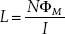
(2.52)
For an air-filled solenoid, as shown in Fig. 1.128, if a current I flows through the coil, Ampere’s law allows us to calculate the magnetic flux:
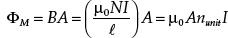
where nunit is the turns per unit length:
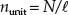
(2.53)
where N is the total turns and 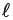 is the length. The variable A is the cross-sectional area of the coil, and μ is the permeability of the material on which the coil is wound. For most materials (excluding iron and ferrite materials), the permeability is close to the permeability of free space:
μ0 = 4π × 10−7 T ⋅ m/A
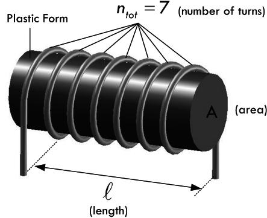
FIGURE 2.128
According to Faraday’s law, an induced voltage is in each loop of the solenoid, resulting in a net induced voltage across the solenoid equal to n times the change in magnetic flux:
The term in front of dI/dt in the equation we call the inductance of the solenoid:
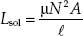
(2.54)
Inductance varies as the square of the turns. If the number of turns is doubled, the inductance is quadrupled. This relationship is inherent in the equation but is often overlooked. For example, if you want to double the inductance of a coil, you don’t double the turns; rather you make the number of turns  (or 1.41) times the original number of turns, or 40 percent more turns.
(or 1.41) times the original number of turns, or 40 percent more turns.
Example 2: Find the inductance of a cylindrical coil of length 10 cm, radius 0.5 cm, having 1000 turns of wire wrapped around a hollow plastic form.
Answer:
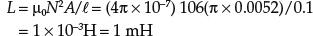
Luckily, there are some simple formulas, shown in Fig. 2.129, for air core inductors, as well as for a multiple-wound and a spiral-wound inductor. Note that the formulas’ answers will not be in standard form—they assume the results are in units of microhenrys.
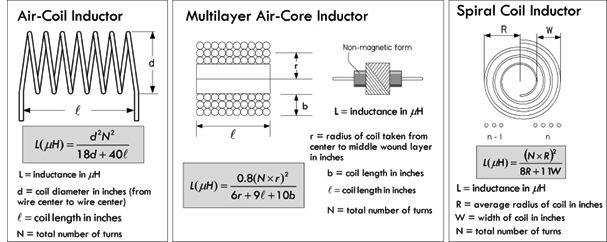
FIGURE 2.129 Practical air core inductor equations.
Example 3: What is the inductance of a coil wrapped around a 0.5-in-diameter plastic form if the coil has 38 turns wound at 22 turns per inch?
Answer: First the total length is determined:
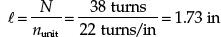
Next, using the equation for an air core inductor shown in Fig. 2.129, noting the result will be in units of microhenrys, we get:
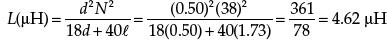
Example 4: Design a solenoid inductor with an inductance of 8 μH if the form on which the coil is wound has a diameter of 1 in and a length of 0.75 in.
Answer: Rearranging the equation in the previous example:
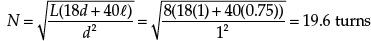
A 20-turn coil would be close enough in practical work. Since the coil will be 0.75 in long, the number of turns per inch will be 19.6/0.75 = 26.1. A #17 enameled wire (or anything smaller) can be used. In practice, you wind the required number of turns on the form and then adjust the spacing between the turns to make a uniformly spaced coil of 0.75 in long.
On the Internet you’ll find a number of free web-based inductor calculators. Some are quite advanced, allowing you to input inductance, diameter, and length values, and afterward providing you with the required number of turns, possible number of layers required, dc resistance of the wire, wire gauge to use, and so on. Check these tools out—you can save yourself the trouble of doing calculations and looking up wire dimensions and such.
2.24.7 Energy Within an Inductor
An ideal inductor, like an ideal capacitor, doesn’t dissipate energy, but rather stores it in the magnetic field and later returns it to the circuit when the magnetic field collapses. The energy EL stored in the inductor is found by using the generalized power law P = IV, along with the definition of power P = dW/dt, and the inductor equation V = L dI/dt. By equating the work W with EL we get:
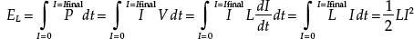
(2.55)
where EL = energy in joules, I = current in amps, and L = inductance in henrys. Note that in a real inductor a small portion of energy is lost to resistive heating through the inductor’s internal resistance.
2.24.8 Inductor Cores
To conserve space and material, inductors are often wound on a magnetic core material, such as laminated iron or a special molded mix made from iron powder or ferrite material (iron oxide mixed with manganese, zinc, nickel, and other ingredients). A magnetic core increases the magnetic flux density of a coil greatly, and thus increases the inductance. This is further intensified if the magnetic core is formed into a doughnut-shaped toroid. See Fig. 2.130.
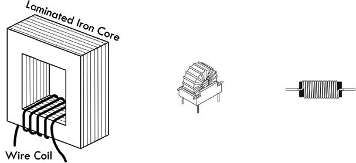
FIGURE 2.130 Magnetic core inductors.
The reason a magnetic core is so influential has to do with the magnetization that occurs within it as the outer coil passes current. When current is sent through the wire coil, a relatively weak magnetic field is set up at its center. This magnetic field, which we’ll call the external magnetic field, causes the atomic rearrangement of magnetic dipoles (refer to Fig. 2.112) within the core material. This realignment is such as to rotate the dipole moments in a common direction. As more current is passed through the coil, more and more dipoles line up. The core itself is now generating a magnetic field as a result of the dipole alignment. The net magnetic field Btotal generated by the whole inductor (coil and core) then becomes the sum of the external field (coil) and a term that is proportional to the magnetization M present in the core itself, as the external field is applied by the coil through the core. Mathematically, this is expressed:
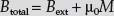
(1)
where μ0 is the permeability of free space. The magnetic intensity H due to real current in the coil, as opposed to the magnetic intensity generated by atomic magnetization of the core, is expressed:
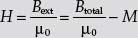
(2)
This can be further reduced, using the notions of susceptibility and permeability (consult a physics book), to:
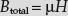
(3)
where μ is the permeability of the core material.
The ratio of magnetic flux density produced by a given core material compared to the flux density produced by an air core is called the relative permeability of the material μR = μ/μ0. For example, an air core generating a flux density of 50 lines of force per square inch can be made to generate 40,000 lines of force per square inch with an iron core inserted. The ratio of these flux densities, iron core to air core, or the relative permeability is 40,000/50, or 800. Table 2.8 shows permeabilities of some popular high-permeability materials.
TABLE 2.8 Permeability of Various Materials
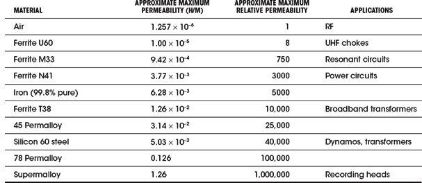
Problems with Magnetic Cores
When a magnetic core material is conductive (e.g., steel), there is a phenomenon known as eddy currents that arise within the core material itself when there is an applied magnetic field that is changing. For example, in Fig. 2.131a, when an increasing current is supplied through the outer coil, a changing magnetic flux passes through the core. This in turn induces a circular current flow within the core material. Eddy currents that are induced in the core represent loss in the form of resistive heating and can be a significant disadvantage in certain applications (e.g., power transformers). Eddy current losses are higher in materials with low resistivity.
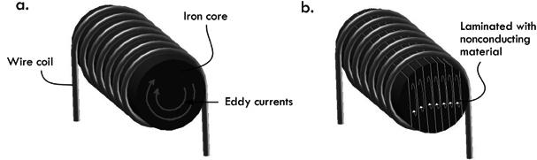
FIGURE 2.131 (a) Large eddy currents within core. (b) Eddy currents are reduced within laminated core.
To avoid eddy currents, the conductive core (steel, in this case) can be laminated together with insulating sheets of varnish or shellac. Current will still be induced in the sheets of the core, as shown in Fig. 2.131b, but because the area of the sheets is limited, so is the flux change, and therefore so are these currents.
Ferrite materials have quite high intrinsic resistivity compared to, say, steel (10 to 1,000 Ω-cm for Mn-Zn ferrites; 105 to 107 Ω-cm for Ni-Zn ferrites). Eddy current losses are therefore much less of a problem in ferrites, and this is the fundamental reason they are used in higher-frequency applications. Powdered iron cores, with their insulating compound present between iron particles, also reduce eddy currents, since the path for the eddy current is limited to the powder particle size.
A second difficulty with iron is that its permeability is not constant, but varies with the strength of the magnetic field and, hence, with the current in the windings. (It also varies with temperature.) In fact, at sufficiently high magnetic fields, the core will saturate and its relative permeability will drop to a value near unity. Not only that, but the magnetic field in the iron depends on the past history of the current in the winding. This property of remanence is essential in a permanent magnet, but in an inductor it gives rise to additional losses, called hysteresis losses. See Fig. 2.132.
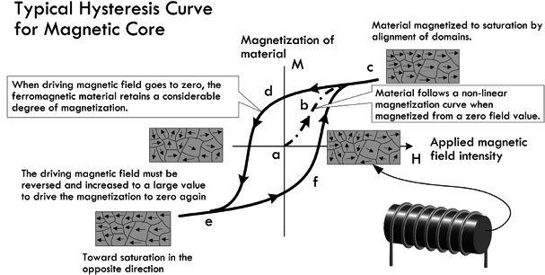
FIGURE 2.132 Hysteresis curve showing how the magnetization of the core material does not represent a reversible process. At point a, no current is applied through the coil. Along path a-b-c, coil current, and thus H (applied magnetic field or magnetizing force), increases, causing the core’s magnetic dipole moments (in this case localized in domains) to rotate in proportion. As we approach point c, the core reaches saturation—increasing H causes no appreciable increase in M (magnetization or magnetic dipole density of core)—the domain’s dipole moments are aligned as much as possible parallel to H. Saturation causes a rapid decrease in permeability. The saturation point of a magnetic core varies with material makeup; air and other nonmagnetic materials do not saturate—they have a permeability of 1. As H is decreased, the magnetization M does not follow the same path back down, but follows path c-d-e. Notice that when H goes to zero, the core remains magnetized. In essence, the core has become a permanent magnet. The term retentivity is used to describe this effect, and it presents another set of losses caused by hysteresis. In order to demagnetize the core, a reverse force is necessary to overcome the residual magnetism retained by the core. In other words, H must go negative in the opposite direction, driving the magnetic domains back into a random orientation. At point e, the core has again reached saturation; however, the magnetic dipoles (domains) are now pointing in the opposite direction. To reach saturation in the opposite direction again, H must be applied, as shown in path e-f-c. Air cores and other materials with a permeability of 1, such as brass and aluminum, are immune to hysteresis effects and losses.
To avoid loses associated with hysteresis, it is important to not run the core inductor into saturation. This can be accomplished by running the inductor at lower current, using a larger core, altering the number of turns, using a core with lower permeability, or using a core with an air gap.
It is possible for the eddy current and hysteresis losses to be so large that the inductor behaves more like a resistor. Furthermore, there is always some capacitance between the turns of the inductor, and under some circumstances an inductor may act like a capacitor. (We’ll discuss this a bit later.)
Table 2.9 shows a comparison between the various core inductors.
TABLE 2.9 Comparison of Inductor Cores
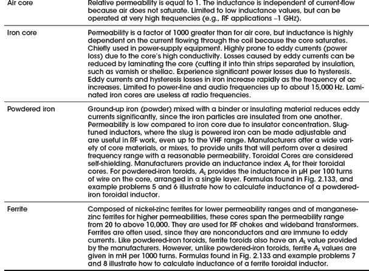
Example 5: What is the inductance of a 100-turn coil on a powdered iron toroidal core with an index of inductance of 20?
Answer: To solve this you’d have to consult the manufacturer’s data sheets, but, here, use a T-12-2 from the table in Fig. 2.133. Using the equation for powdered iron toroids in Fig. 2.133, and inserting AL = 20 for the T-12-2, and N = 100:
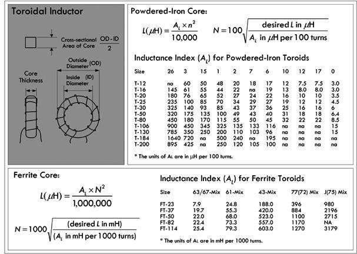
FIGURE 2.133
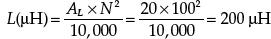
Example 6: Calculate the number of turns needed for a 19.0-μH coil if the index of inductance for the powdered iron toroid is 36.
Answer: Use:
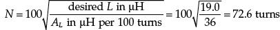
Example 7: What is the inductance of a 50-turn coil on a ferrite toroid with an index of inductance of 68?
Answer: To solve this you’d have to consult the manufacturer’s data sheets, but here we’ll use a FT-50 with 61-Mix, as shown in the table in Fig. 2.133. Using the equation for ferrite toroids in Fig. 2.133, and inserting AL = 68 for the FT-50-61, and N = 50:
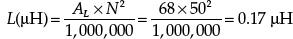
Example 8: How many turns are needed for a 2.2-mH coil if the index of inductance for the ferrite toroid is 188?
Answer: Use
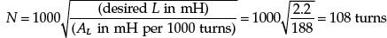
2.24.9 Understanding the Inductor Equations
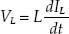
The preceding inductor equation (which we derived earlier) has some curious properties that may leave you scratching your head. For starters, let’s consider the dIL/dt term. It represents the rate of change in current through the inductor with time. If there is no change in current flow through the inductor, there is no measured voltage across the inductor. For example, if we assume that a constant dc current has been flowing through an inductor for some time, then dIL/dt is zero, making VL zero as well. Thus, under dc conditions the inductor acts like a short—a simple wire.
However, if the current IL is changing with time (increasing or decreasing), dIL/dt is no longer zero, and an induced voltage VL is present across the inductor. For example, consider the current waveform shown in Fig. 2.134. From time interval 0 to 1s, the rate of current change dIL/dt is 1 A/s—the slope of the line. If the inductance L is 0.1 H, the induced voltage is simply (1 A/s)(0.1 H) = 0.1 V during this time interval—see the lower waveform. During interval 1s to 2s, the current is constant, making the dIL/dt zero and, hence, the induced voltage zero. During interval 2s to 3s, dIL/dt is −1 A/s, making the induced voltage equal to (−1 A/s)(0.1 H) = −0.1 V. The induced voltage waveform paints the rest of the picture.
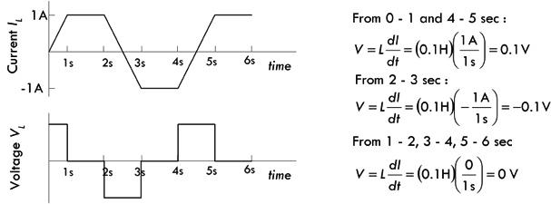
FIGURE 2.134
Example 9: If the current through a 1-mH inductor is given by the function 2t A, what is the voltage across it?
Answer:
Example 10: The current through a 4-mH inductor is given by IL = 3 − 2e−10t A. What is the voltage across the inductor?
Answer:
Example 11: Suppose the current flow through a 1-H inductor decreases from 0.60 A to 0.20 A during a 1-s period. Find the average voltage across the inductor during this period. See how this compared to the average induced voltage if the period is 100 ms, 10 ms, and 1 ms.
Answer: Here we ignore changes between the 1-s intervals, and take averages:
From Example 11, notice how the induced voltage grows considerably larger as the change in current flow is more abrupt. When the change in current flow is instantaneous, the inductor equation predicts an infinite induced voltage. How can this be?
The answer to this dilemma is explained by the following example. Say you have an ideal inductor attached to a 10-V battery via a switch, as shown in Fig. 2.135. The moment the switch is closed, according to the inductor equation, dI/dt should be infinite (assuming ideal battery, wires, and coil wire). This means that the induced voltage should rise in proportion with the applied voltage, forever, and no current should flow. In other words, the reverse voltage should jump to infinity. (See Fig. 135b.) Likewise, if the switch is opened, as shown in Fig. 135c, an infinite forward voltage is predicted. The answer to this problem is rather subtle, but fundamentally important. As it turns out, these infinities we predict are never observed in the real world. There is always internal resistance within a real inductor as well as internal capacitance (as well as internal resistance and capacitance in the rest of the circuit). A realistic model of an inductor is shown in Fig. 135d, incorporating internal resistance and capacitance. It is these “imperfections” that explain why the predictions are not observed.
FIGURE 2.135 Real inductors never generate infinite induced voltages.
As we can see from the last example, ignoring internal resistance can cause conceptual headaches. You may be wondering why someone didn’t simply create an inductor equation that automatically included an internal resistance term. The fact of the matter is that we should, especially when considering a simple circuit like that shown in Fig. 2.135. However, it is important to define inductance as a unique quantity and associate its effects with changing magnetic field energy alone, not with resistive heating within the coil or magnetic core losses, or with distributed capacitance between the coil loops. As it turns out, when you start analyzing more complex circuits (say RL circuits and RLC circuits), the discrete resistance present within the circuit will keep the inductor equation from freaking out. In more precise circuits, knowing the internal resistance of the inductor is critical. A standard practice is to represent an inductor as an ideal inductor in series with a resistor RDC, where RDC is called the dc resistance of the inductor. More accurate models throw in parallel capacitance (interloop capacitance) and parallel resistance (representing magnetic core losses), which become important in high-frequency applications.
Before we move on, it should be noted that even though we must assume there is internal resistance within an inductor, it is still possible for induced voltages to reach surprisingly high values during transient conditions. For example, turning off inductive circuits can lead to some dangerously high voltages that can cause arcing and other problems requiring special handling.
Example 12: Suppose you apply a linearly increasing voltage across an ideal 1-H inductor. The initial current through the inductor is 0.5 A, and the voltage ramps from 5 to 10 V over a 10 ms interval. Calculate the current through the inductor as a function of time.
Answer: Kirchhoff’s voltage law gives:
Integrating this gives:
or:
Carrying out the integration gives:
At t = 0.01 s (the end of the ramp), the current is:
The answer in the text ignores the initial current and has a numerical error in the last equality.
2.24.10 Energizing LR Circuit
When a resistor is placed in series with an inductor, the resistance controls the rate at which energy is pumped into the magnetic field of the inductor (or pumped back into the circuit when the field collapses). When we consider an RL circuit with a dc supply and a switch, as shown in Fig. 2.136, the energizing response that begins the moment the switch is closed (t = 0) is illustrated by the voltage and current response curves in Fig. 2.136, as well as the equations to the right.
FIGURE 2.136
Current and voltage equations for RL energizing circuit:
where I is the current in amps, VS is the source voltage in volts, R is the resistance in ohms, L is the inductance in henrys, t is the time in seconds after the source voltage is applied, e = 2.718, VR is the resistor voltage in volts, and VL is the inductor voltage in volts. The graph shown to the left is for a circuit with R = 100 Ω and L = 20 mH.
You can derive the expressions for the energizing response of an RL circuit by applying Kirchhoff’s law, summing the voltages around the closed loop:
Rewriting in the standard form gives:
After solving this linear, first-order nonhomogeneous differential equation, using the initial condition that the current before the switch was closed was zero I (0) = 0, the solution for the current becomes:
We plug this into Ohm’s law to find the voltage across the resistor:
VR = IR = VS (1 − e−t/(L/R))
and plug it into the expression for the inductor voltage:
To understand what’s going on within the energizing RL circuit, we first pretend the resistor value is zero. With no resistance, when the switch is closed, the current would increase forever (according to Ohm’s law and assuming an ideal voltage source), always growing just fast enough to keep the self-induced voltage equal to the applied voltage.
But when there is resistance in the circuit, the current is limited—Ohm’s law defines the value the current can reach. The reverse voltage generated in L must only equal the difference between the applied voltage and the drop across R. This difference becomes smaller as the current approaches the final Ohm’s law value. Theoretically, the reverse voltage never quite disappears, and so the current never quite reaches the no-inductor value. In practical terms, the differences become immeasurable after a short duration.
The time in seconds required for the current to build up to 63.2 percent of the maximum value is called the time constant, and is equal to L/R. After each time interval equal to this constant, the circuit conducts an additional 63.2 percent of the remaining current. This behavior is graphed in Fig. 2.137. As is the case with capacitors, after five time constants the current is considered to have reached its maximum value.
FIGURE 2.137
Example 13: If an RL circuit has an inductor of 10 mH and a series resistor of 10 Ω, how long will it take for the current in the circuit to reach full value after power is applied?
Answer: Since reaching maximum current takes approximately five time constants, t = 5τ = 5 (L/R) = 5 (10 × 10−3 H)/10 Ω = 5.0 × 10−3 s or 5.0 ms.
Note that if the inductance is increased to 1.0 H, the required time increases to 0.5 s. Since the circuit resistance didn’t change, the final current is the same for both cases in this example. Increasing inductance increases the time required to reach full current. Figure 2.137 shows current response curves for various inductors with the same resistance.
2.24.11 Deenergizing LR Circuit
Unlike a capacitor that can store energy in the form of an electric field when an applied voltage is cut (say, by means of a switch), an inductor does not remain “charged,” or energized, since its magnetic field collapses as soon as current ceases. The energy stored in the magnetic field returns to the circuit. Now, when current flow is cut (say, by means of a switch), predicting the current flow and voltage drops within an RL circuit is a bit tricky. We can say that the instant the switch is opened, a rapid collapse of the magnetic field induces a voltage that is usually many times larger than the applied voltage, since the induced voltage is proportional to the rate at which the field changes. The common result of opening the switch in such a circuit is that a spark or arc forms at the switch contacts during the instant the switch opens—see Fig. 2.138a. When the inductance is large and the current in the circuit is high, large amounts of energy are released in a very short time. It is not unusual for the switch contacts to burn or melt under such circumstances. The spark or arc at the opened switch can be reduced or suppressed by connecting a suitable capacitor and resistor in series across the contacts. Such an RC combination is called a snubber network. Transistor switches connected to large inductive loads, such as relays and solenoids, also require protection. In most cases, a small power diode connected in reverse across the relay coil will prevent field-collapse currents from harming the transistor—more on this in a moment.
In A, a break in current flow caused by opening a switch will cause a large inductive load’s magnetic field to collapse, thus generating a large forward voltage. This voltage can be so big that the “electron pressure” between the switch contacts becomes so large that electrons escape the metal surface of one switch contact and jump toward the other contact. As the liberated electrons make the jump, they collide with airborne molecules, causing ionization reactions, which lead to a spark discharge across the switch contacts. The current and voltage response curves under such conditions are rather complex.
In B, if we remove the applied voltage but prevent a break in the circuit by moving the discharge to the ground (switch thrown to position B), we get predictable current and voltage expressions:
where I is the current in amps, VS is the source voltage in volts, R is the resistance in ohms, L is the inductance in henrys, t is the time in seconds after the source voltage is applied, e = 2.718, VR is the resistor voltage in volts, and VL is the inductor voltage in volts. The graph shown in the figure is for a circuit with R = 100 Ω and L = 20 mH.
FIGURE 2.138
If the excitation is removed without breaking the circuit, as theoretically diagrammed in Fig. 2.138b, the current will decay according to the following waveforms and equations.
You can derive the expressions for a deenergizing RL circuit by applying Kirchhoff’s law, summing the voltage around the closed loop:
Vs is 0 because the battery is no longer in the circuit. Rewriting in the standard form gives:
After solving this linear, first-order nonhomogeneous differential equation, using the initial condition that the current before the switch was closed was simply:
the solution for the current becomes:
We plug this into Ohm’s law to find the voltage across the resistor:
VR = IR = VSe−t/(L/R)
and plug it into the expression for the inductor voltage:
As with the energizing RL circuit, the deenergizing RL circuit current response can be modeled in terms of time constants. After five time constants, the inductor is considered fully deenergized. Increasing the inductance increases this time, as shown in Fig. 2.139.
FIGURE 2.139
Inductance, be it intended or not, can have a major influence on signals. For example, the output signals across the inductor and resistor in the RL circuit to the left become increasingly distorted as the inductance increases. With a constant 1.0-kHz, 0–5-V squarewave source, and fixed 10-Ω resistance, we increase the inductance and note the changes in the waveforms. First we note that the period of the squarewave is:
Now let’s see how the waveforms change as we choose increasing inductance values.
Graph A: Inductance: L = 0.1 mH
Time constant: τ = 0.0001 H/10 Ω = 0.01 ms
Here the RL time constant is 1 percent of the period, so the induced voltage spikes are narrow during squarewave high-to-low and low-to-high transitions. Considering that an inductor is fully energized or deenergized after five time constants or, in this case, 0.05 ms, the inductor easily completely energizes and deenergizes during a half period of 0.5 ms. The voltage across the resistor is slightly rounded at the edges as a result.
Graph B: Inductance: L = 1 mH
Time constant: τ = 0.001 H/10 Ω = 0.1 ms
The RL time constant is 10 percent of the period, so induced voltage and the effects of exponential rise and fall during source voltage transitions are clearly visible. To fully energize or deenergize requires five time constants, or 0.5 ms, which is exactly equal to the half period of the signal. Hence, the magnetic field about the inductor is capable of absorbing and giving up all its magnetic field energy during each consecutive half cycle.
Graph C: Inductance: L = 10 mH
Time constant: τ = 0.01 H/10 Ω = 1 ms
The RL time constant is equal to the period of the squarewave. However, since it requires five time constants, or 5 ms, to be fully energized or deenergized, the resulting voltages appear linear—you get to see only a small portion of the exponential rise or fall. The magnetic field about the inductor isn’t able to absorb or give up all its energy during a half cycle.
Graph D: Inductance: L = 1 H
Time constant: τ = 1 H/10 Ω = 0.1 s
The RL time constant is 100 times as large as the period of the squarewave. Again, to become fully energized or deenergized requires five time constants, or 500 times the period. This means that there is practically no time for the inductor to fully energize or deenergize. Though there is exponential rise and decay, practically, you see only the first portion, which appears linear.
FIGURE 2.140
2.24.12 Voltage Spikes Due to Switching
Inductive voltage spikes are common in circuits where large inductive loads, such as relays, solenoids, and motors, are turned on and off by a mechanical or transistor-like switch. Spikes as high as a couple hundred volts are possible, even when the supply voltages are relatively small. Depending on the circuit design, these voltage spikes can cause arcing, leading to switch contact degradation, or damage to transistor or other integrated switching devices. Figure 2.141 shows a diode (a device that acts as a one-way gate to current flow) placed across the coil of a relay to provide a “pressure release” path for the inductive spike, should the supply voltage circuit be broken.
FIGURE 2.141
2.24.13 Straight-Wire Inductance
Every conductor passing current has a magnetic field associated with it and, therefore, inductance—the conductor need not be formed into a coil. For example, a straight wire has an inductance associated with it. This is attributed to the average alignment of magnetic fields of individual free electrons as they obtain a drift component under an applied EMF. The inductance of a straight nonmagnetic wire or rod in free space is given by:
(2.56)
where L is the inductance in μH, a is the wire radius in inches, b is the length in inches, and ln is the natural logarithm.
Example 14: Find the inductance of a #18 wire (diameter = 0.0403 in) that is 4 in long.
Answer: Here a = 0.0201 and b = 4, so:
Skin effects change Eq. 2.56 slightly at VHF (30–300 MHz) and above. As the frequency approaches infinity, the constant 0.75 in the preceding equation approaches 1.
Straight wire inductance is quite small, and is typically referred to as parasitic inductance. We can apply the concept of reactance to inductors, as we did with capacitive reactance earlier in this chapter. Parasitic inductive reactance at low frequencies (AF to LF) is practically zero. For instance, in our example, at 10 MHz the 0.106-μH inductance provides only 6.6 Ω of reactance. However, if we consider a frequency of 300 MHz, the inductive reactance goes to 200 Ω—a potential problem. For this reason, when designing circuits for VHF and above it is important to keep component leads as short as possible (capacitor leads, resistor leads, etc.). Parasitic inductance in a component is modeled by adding an inductor of appropriate value in series with the component (since wire lengths are in series with the component).
FIGURE 2.142
2.24.14 Mutual Inductance and Magnetic Coupling
When two inductor coils are placed near each other with their axes aligned, the current applied through coil 1 creates a magnetic field that propagates through coil 2. See Fig. 2.143.
FIGURE 2.143
As a result, a voltage is induced in coil 2 whenever the field strength of coil 1 changes. The voltage induced in coil 2 is similar to the voltage of self-induction, but since it acts upon the external coil 2, it is called mutual induction—the two coils are said to be inductively coupled. The closer the coils are together, the greater the mutual inductance. If the coils are farther apart or are aligned off axis, the mutual inductance is relatively small—the coils are said to be loosely coupled. The ratio of actual mutual inductance to the maximum possible mutual inductance is called the coefficient of coupling, which is usually given as a percentage. The coefficient with air core coils may run as high as 0.6 to 0.7 if one coil is wound over the other, but much less if the two coils are separated. It is possible to achieve near 100 percent coupling only when the coils are wound on a closed magnetic core—a scenario used in transformer design. Mutual inductance also has an undesirable consequence within circuit design, where unwanted induced voltages are injected into circuits by neighboring components or by external magnetic field fluctuations generated by inductive loads or high-current alternating cables.
2.24.15 Unwanted Coupling: Spikes, Lightning, and Other Pulses
There are many phenomena, both natural and man-made, that generate sufficiently large magnetic fields capable of inducing voltages in wires leading into and out of electrical equipment. A mutual inductance exists between the external source and the affected circuit in question. Parallel-wire cables linking elements of electronic equipment consist of long wires in close proximity to each other. Signal pulses can couple both magnetically and capacitively from one wire to another. Since the magnetic field of a changing current decreases as the square of distance, separating the signal-carrying lines diminishes inductive coupling. Unless they are well shielded and filtered, however, the lines are still susceptible to the inductive coupling of pulses from other sources. This is often experienced when using a long ground lead for a scope probe—external magnetic interference can couple to the ground lead of the probe and appear within the displayed signal as unwanted noise. Such coupling between external sources and electrical equipment can be quite problematic—even more so when the source generates a “burst” in magnetic field strength. Sudden bursts have a tendency to induce high-level voltage spikes onto ac and dc power lines, which can migrate into the inner circuitry where sensitive components lay prone to damage. For example, lightning in the vicinity of the equipment can induce voltages on power lines and other conductive paths (even ground conductors) that lead to the equipment location. Lightning that may appear some distance away can still induce large spikes on power lines that ultimately lead to equipment. Heavy equipment with electrical motors can induce significant spikes into power lines within the equipment location. Even though the power lines are straight, the powerful magnetic fields of a spike source can induce damaging voltages on equipment left plugged in during electrical storms or during the operation of heavy equipment that inadequately filters its spikes.
2.24.16 Inductors in Series and Parallel
FIGURE 2.144
When two or more inductors are connected in series, the total inductance is equal to the sum of the individual inductances, provided the coils are sufficiently separated, so that coils are not in the magnetic field of one another:
(2.57) Inductors in series
You can derive the inductors-in-series formula by applying Kirchhoff’s voltage law. Taking the voltage drop across L1 to be L1dI/dt and the voltage drop across L2 to be L2dI/dt, and across L3 to be L3dI/dt, you get the following expression:
L1 + L2 + L3 is called the equivalent inductance for three inductors in series.
If inductors are connected in parallel, and if the coils are separated sufficiently, the total inductance is given by:
(2.58) Inductors in parallel
When only two inductors are in parallel, the formula simplifies to Ltot = (L1 × L2)/(L1 + L2).
You derive this by applying Kirchhoff’s current law to the junction, which gives I = I1 + I2 + I3, making use of the fact that the voltage V is the same across L1, L2, and L3. Thus I1 becomes , I2 becomes , and I3 becomes . The final expression for I is:
1/L1 + 1/L2 + 1/L3 is called the equivalent inductance of three inductors in parallel.
Example 15: What value of L2 is required to make the total equivalent inductance of the circuit shown in Fig. 2.145 equal to 70 mH?
FIGURE 2.145
Answer: 30 mH; use
2.24.17 Alternating Current and Inductors
When an alternating voltage is applied to an ideal inductance, the current that flows through the inductor is said to lag the applied voltage by 90°. Or if you like, the applied voltage leads the current by 90°. (This is exactly the opposite of what we saw with capacitors under ac.) The primary cause for the current lag in an inductor is due to the reverse voltage generated in the inductance. The amplitude of the reverse voltage is proportional to the rate at which the current changes. This can be demonstrated by the graph in Fig. 2.146. If we start at time segment 0A, when the applied voltage is at its positive maximum, the reverse or induced voltage is also at a maximum, allowing the least current to flow. The rate at which the current is changing is the highest, a 38 percent change in the time period 0A. In the segment AB, the current changes by only 33 percent, yielding a reduced level of induced voltage, which is in step with the decrease in the applied voltage. The process continues in time segments BC and CD, the latter producing only an 8 percent rise in current as the applied and induced voltage approach zero.
FIGURE 2.146
In interval DE, the applied voltage changes direction. The induced voltage also changes direction, returning current to the circuit as the magnetic field collapses. The direction of this current is now opposite to the applied voltage, which sustains the current in the positive direction. As the applied voltage continues to increase negatively, the current—although positive—decreases in value, reaching zero as the applied voltage reaches its negative maximum. The negative half cycle continues just as did the positive half cycle. Thus, we say that within a pure inductive ac circuit, the current lags the voltage by 90°.
2.24.18 Inductive Reactance
The amplitude of alternating current in an inductor is inversely proportional to the applied frequency. Since the reverse voltage is directly proportional to inductance for a given rate of current change, the current is inversely proportional to inductance for a given applied voltage and frequency. The combined effect of inductance and frequency is called inductive reactance. Like capacitive reactance, inductive reactance is expressed in ohms. The inductive reactance is given by the following formula:
(2.59) Inductive reactance
where XL is inductive reactance, π = 3.1416, f is frequency in Hz, and L is inductance in henrys. Inductive reactance, in angular form (where ω = 2πf), is equal to:
XL = ωL.
You derive the expression for inductive reactance by connecting an inductor to a sinusoidal voltage source. To make the calculations more straightforward, we’ll use a cosine function instead of a sine function—there is really no difference here. For example, if the source voltage is given by V0 cos (ωt), the current through the inductor becomes
the maximum current or peak current through an inductor occurs when sin (ωt) = 1, at which point it is equal to:
The ratio of peak voltage to peak current resembles a resistance and has units of ohms. However, because the physical phenomenon doing the “resisting” (e.g., reverse induced voltage working against forward voltage) is different from a resistor (heating), the effect is given a new name, inductive reactance:
As ω goes to infinity, XL goes to infinity, and the inductor acts like an open circuit (inductors do not like to pass high-frequency signals). However, as ω goes to 0, the XL goes to zero (inductors have an easier time passing low-frequency signals and ideally present no “resistance” to dc signals).
Figure 2.147 shows a graph of inductive reactance versus frequency for 1-μH, 10-μH, and 100-μH inductors. Notice the response is linear—increasing the frequency increases the reactance in proportion. However, in real inductors, the reactive response is a bit more complicated, since real inductors have parasitic resistance and capacitance built in. Figure 2.147 shows a real-life impedance versus frequency graph.
FIGURE 2.147
Notice that when the frequency approaches what is called the resonant frequency, the impedance is no longer linear in appearance, but peaks and falls. (This will make more sense when we cover resonant circuits a bit later.)
Example 16: What is the reactance of an ideal 100-μH coil with applied frequencies of 120 Hz and 15 MHz?
Answer:
120 Hz: XL = 2πfL = 2π(120 Hz)(100 × 10−6 H) = 0.075 Ω
15 MHz: XL = 2πfL = 2π(15 × 106 Hz)(100 × 10−6 H) = 9425 Ω
Example 17: What inductance provides 100 Ω of reactance with an applied frequency of 100 MHz?
Answer:
Example 18: At what frequency will the reactance of a 1-μH inductor reach 2000 Ω?
Answer:
By the way, inductive reactance has an inverse called inductive susceptance, given by the following expression:
(2.60)
Inductive susceptance uses units of siemens, abbreviated S (S = 1/Ω). It simply tells you “how well” an inductor passes current, as opposed to “how bad” it does—as reactance implies.
2.24.19 Nonideal Inductor Model
Though the ideal inductor model and associated ideal equations are fundamentally important in circuit analysis, using them blindly without consideration of real inductor imperfections, such as internal resistance and capacitance, will yield inaccurate results. When designing critical devices, such as high-frequency filters used in radio-frequency receivers, you must use a more accurate real-life inductor model.
In practice, a real inductor can be modeled by four passive ideal elements: a series inductor (L), a series resistor RDC, a parallel capacitor CP, and a parallel resistor RP. RDC represents the dc resistance, or the measured resistance drop when a dc current passes through the inductor. Manufacturers provide the dc resistance of their inductors on their specification sheets (e.g., 1900 series 100-μH inductor with an RDC of 0.0065 Ω). RP represents magnetic core losses and is derived from the self-resonant frequency f0—the point at which the reactance of the inductor is zero (i.e., the impedance is purely resistive). It can be calculated from the quality factor Q, as we’ll see in a moment. The parallel resistor limits the simulated self-resonance from rising to infinity. CP represents the distributed capacitance that exists between coils and leads within the inductor, as shown in Fig. 2.148. When a voltage changes due to ac current passing through a coil, the effect is that of many small capacitors acting in parallel with the inductance of the coil. The graph in Fig. 2.148 shows how this distributed capacitance resonates with the inductance. Below resonance, the reactance is inductive, but it decreases as the frequency increases. Above resonance, the reactance is capacitive and increases with frequency.
FIGURE 2.148 Inductors exhibit distributed capacitance, as explained in the text. The graph shows how this distributed capacitance resonates with the inductance. Below resonance, the reactance is inductive, but it decreases as frequency increases. Above resonance, the reactance is capacitive and increases with frequency.
Inductors are subject to many types of electrical energy losses, however—wire resistance, core losses, and skin effect. All electrical conductors have some resistance through which electrical energy is lost as heat. Moreover, inductor wire must be sized to handle the anticipated current through the coil. Wire conductors suffer additional ac losses because alternating current tends to flow on the conductors’ surface. As the frequency increases, the current is confined to a thinner layer on the conductor surface. This property is called the skin effect. If the inductor’s core is a conductive material, such as iron, ferrite, or brass, the core will introduce additional losses of energy.
2.24.20 Quality Factor
Components that store energy, such as capacitors and inductors, can be described in terms of a quality factor Q. The Q of such a component is a ratio of its ability to store energy to the total of all energy losses within the component. In essence, the ratio reduces to: Q = X/R, where Q is the quality factor (no units), X is the reactance (inductive or capacitive), and R is the sum of all resistance associated with the real energy losses within the component, given in ohms.
For a capacitor, Q is ordinarily high, with quality ceramic capacitors obtaining values of 1200 or more. Small ceramic trimmer capacitors may have Q values that are so small that they shouldn’t be ignored in certain applications.
The quality factor for an inductor is given by Q = 2πfL/RDC. The Q value for an inductor rarely if ever approaches capacitor Q in a circuit where both components work together. Although many circuits call for the highest Q inductor obtainable, other circuits call for a specific Q, which may, in fact, be very low.
Inductive Divider
Inductive dividers can be used with ac input signals. A dc input voltage would split according to the relative resistances of the two inductors by using the resistive voltage divider. The formula for determining the ac output voltage of an inductive divider (provided the inductors are separated—that is, not wound on the same core—and have no mutual inductance) is shown in Fig. 2.149.
FIGURE 2.149
Note that the output voltage is independent of the input frequency. However, if the reactance of the inductors is not high at the frequency of operation, (i.e., the inductance is not large enough), there will be a very large current drawn by the shunt element (L2).
2.24.21 Inductor Applications
Inductors’ basic function in electronics is to store electrical energy in a magnetic field. Inductors are used extensively in analog circuits and signal processing, including radio reception and broadcasting. Inductors, in conjunction with capacitors and other components, can form electric filters used to filter out specific signal frequencies. Two (or more) coupled inductors form a transformer that is used to step up or step down an ac voltage. An inductor can be used as the energy storage device in a switching regulator power supply—the inductor is charged for a specific fraction of the regulator’s switching frequency and discharged for the remainder of the cycle. This charge/discharge ratio determines the output-to-input voltage ratio. Inductors are also employed in electrical transmission systems, where they are used to intentionally depress system voltages or limit fault current. In this field, they are more commonly referred to as reactors.
2.25 Modeling Complex Circuits
As a note, let me tell you that this section is designed to scare you. You may have a hard time understanding some parts of this section if you don’t have a decent math background. However, this section is worth reading for theoretical footing and, more important, because it stresses the need to come up with alternative tricks to avoid the nasty math.
Theoretically, given enough parameters, any complex electric circuit can be modeled in terms of equations. In other words, Kirchhoff’s laws always hold, whether our circuit consists of linear or nonlinear elements. Linear devices have responses that are proportional to the applied signal. For example, doubling the voltage across a resistor doubles the current through it. With a capacitor, doubling the frequency of the applied voltage across it doubles the current through it. With an inductor, doubling the frequency of voltage across it halves the current through it. We found that we could apply the following equations to model resistors, capacitors, and inductors:
In terms of voltage and current sources, we have, up until now, mainly discussed dc and sinusoidal sources, which we can express mathematically as:
VS = Constant, IS = Constant, VS = V0 sin (ωt), IS = I0 sin (ωt)
If a circuit contains only resistors, capacitors, inductors, and one of these sources, we simply apply Kirchhoff’s laws and come up with an equation or set of equations that accurately describes how the voltages and currents within our circuit will behave with time. Linear dc circuits are described by linear algebraic equations. On the other hand, linear time-dependent circuits are described by linear differential equations. The time dependence may be a result of a sinusoidal source, or it can simply be a dc source that is turned on or off abruptly—this is referred to as a transient.
As an example, if we have a series RLC circuit (see Fig. 2.150) with a dc source VS, we can write Kirchhoff’s voltage loop equations as:
FIGURE 2.150
This equation isn’t of any practical use at this stage. Mathematically, we need to simplify it in order to get rid of the integral. You’d start out by first differentiating everything with respect to time, then rearrange things to look like this:
This is an example of a linear second-order homogeneous differential equation. To solve it requires some mathematical tricks and defining initial conditions—at which point the switch is turned on or off.
Now, let’s take the same RLC circuit, but remove the switch and dc supply and insert a sinusoidal supply (see Fig. 2.151). The supply is expressed mathematically as V0 cos (ωt).
FIGURE 2.151
Applying Kirchhoff’s voltage equation:
or:
Again, we must simplify it to get rid of the integral:
This expression is a linear second-order nonhomogeneous differential equation. To find the solution to this equation, you could apply, say, the technique of variation of parameters or the method of undetermined coefficients. After the solution for the current is found, finding the voltages across the resistor, capacitor, and inductor is a simple matter of plugging the current into the characteristic voltage/current equation for that particular component. However, coming up with the solution for the current in this case is not easy because it requires advanced math.
As you can see, things don’t look promising, mathematically speaking. Things get even worse when we start incorporating sources that are nonsinusoidal, such as a squarewave source or a triangle wave source. For example, how do we mathematically express a squarewave voltage source? As it turns out, the simplest way is to use the following Fourier series:
where V0 is the peak voltage of the squarewave. If we take our RLC circuit and attach this squarewave voltage source, then apply Kirchhoff’s voltage law around the loop, we get:
As you might guess, the solution to this equation isn’t trivial.
There are other sources we haven’t considered yet, such as nonsinusoidal nonrepetitive sources (impulse, etc.). And things, of course, get worse when you consider circuits with more than three linear elements. Let’s not forget nonlinear devices, like diodes and transistors, which we haven’t even discussed yet.
When circuits get complex and the voltage and current sources start looking weird, setting up Kirchhoff’s equations and solving them can require fairly sophisticated mathematics. There are a number of tricks used in electronic analysis to prevent the math from getting out of hand, but there are situations where avoiding the nasty math is impossible. The comments in Fig. 2.152 should give you a feeling for the difficulties ahead.
FIGURE 2.152
In the next section, we’ll discuss complex numbers. Complex numbers, along with a concept known as complex impedances, are tricks that we’ll use to avoid setting up complex differential equations, at least under special circumstances.
2.26 Complex Numbers
Before I touch upon the techniques used to analyze sinusoidally driven circuits, a quick review of complex numbers is helpful. As you will see in a moment, a sinusoidal circuit shares a unique trait with a complex number. By applying some tricks, you will be able to model and solve sinusoidal circuit problems using complex numbers and the arithmetic that goes with it, and—this is the important part—you will be able to avoid differential equations in the process.
A complex number consists of two parts: a real part and an imaginary part. (See Fig. 2.153.)
FIGURE 2.153
Both a and b are real numbers, whereas i =  is an imaginary unit, thereby making the term ib an imaginary number or the imaginary part of a complex number. In practice, to avoid confusing i (imaginary unit) with the symbol i (current), the imaginary unit i is replaced with a j.
is an imaginary unit, thereby making the term ib an imaginary number or the imaginary part of a complex number. In practice, to avoid confusing i (imaginary unit) with the symbol i (current), the imaginary unit i is replaced with a j.
A complex number can be expressed graphically on a complex plane (argand or gaussian plane), with the horizontal axis representing the real axis and the vertical axis representing the imaginary axis. (See Fig. 2.154.)
FIGURE 2.154
In terms of the drawing, a complex number can be interpreted as the vector from 0 to P having a magnitude of length of:
(2.61)
that makes an angle relative to the positive real axis of:
(2.62)
Now let’s go a bit further—for the complex number to be useful in circuit analysis, it must be altered slightly. If you replace a with r cos θ and replace b with r sin θ, the complex number takes on what is called the polar trigonometric form of a complex number. (See Fig. 2.155.)
FIGURE 2.155
Okay, now you are getting there; just one more thing to cover. Long ago, a man by the name of Euler noticed that the cos θ + j sin θ part of the trigonometric form of the complex number was related to ejθ by the following expression:
(2.63)
You can prove this by taking the individual power series for ejθ, cos θ, j sin θ. When the power series for cos θ and j sin θ are added, the result equals the power series for ejθ. This means that the complex number can be expressed as follows:
(2.64)
This represents the polar exponential form of a complex number. A shorthand version of this form can be written as: